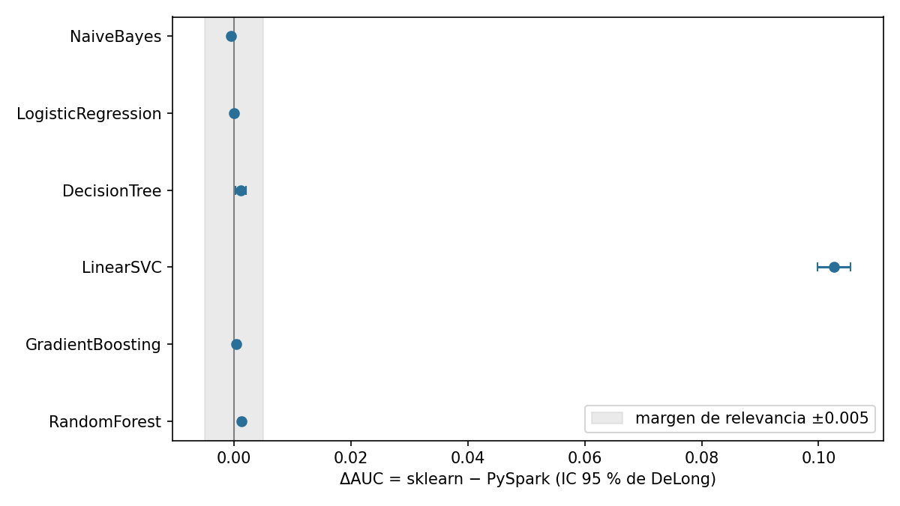
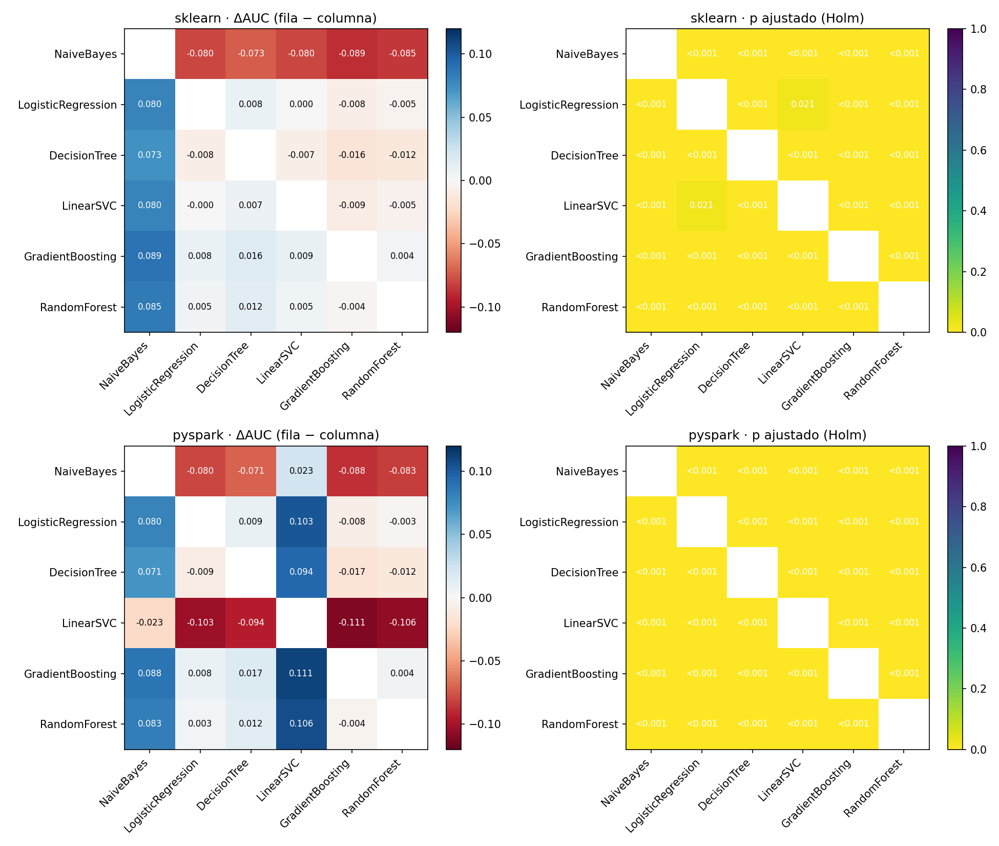

4. Pruebas estadísticas#
Todas las puntuaciones están calculadas sobre las mismas 269,062 observaciones de prueba, por lo que las comparaciones son pareadas.
AUC con intervalo de confianza del 95 % (DeLong)#
DeLong entre entornos (mismo modelo, 6 comparaciones, Holm)#
ΔAUC = AUC(sklearn) − AUC(PySpark). Significativo si p_holm < 0.05; relevante si |ΔAUC| ≥ 0.005.

DeLong entre modelos (15 pares por entorno, Holm)#

McNemar y bootstrap pareado#
McNemar: compara las decisiones de clase (umbral 0.5; 0 para el SVM) usando solo las observaciones donde los dos modelos discrepan.
Bootstrap pareado (B = 2000, semilla 42, misma remuestra para ambos modelos): intervalo percentil del 95 % para ΔAUC, ΔAUC-PR y ΔF1.
Se aplican a las 6 comparaciones entre entornos y a los dos mejores modelos de cada entorno. Holm se aplica dentro de cada familia.
Lectura#
Entre entornos, solo el SVM difiere de forma relevante (ΔAUC = 0.103). La causa es la pérdida:
squared_hingefrente ahinge.Naive Bayes, Random Forest y el árbol de decisión muestran diferencias de AUC estadísticamente significativas pero menores a 0.005 (entre 0.0005 y 0.0012): son equivalentes en la práctica.
La regresión logística y Gradient Boosting no muestran diferencia significativa de AUC.
Las tres pruebas no siempre coinciden. En Gradient Boosting el AUC es el mismo pero ΔF1 = −0.025: Spark predice más positivos con el umbral 0.5. DeLong compara cómo ordenan los modelos; McNemar y F1 miran decisiones con un umbral.
Gradient Boosting supera a Random Forest en ambos entornos (ΔAUC 0.0036 en scikit-learn y 0.0044 en Spark, p < 0.001), pero por debajo del margen de relevancia de 0.005.
El ΔF1 de 0.075 a 0.105 entre esos dos modelos se debe sobre todo al umbral: con 0.5, Random Forest casi no predice incumplimientos (recall de 2 %).